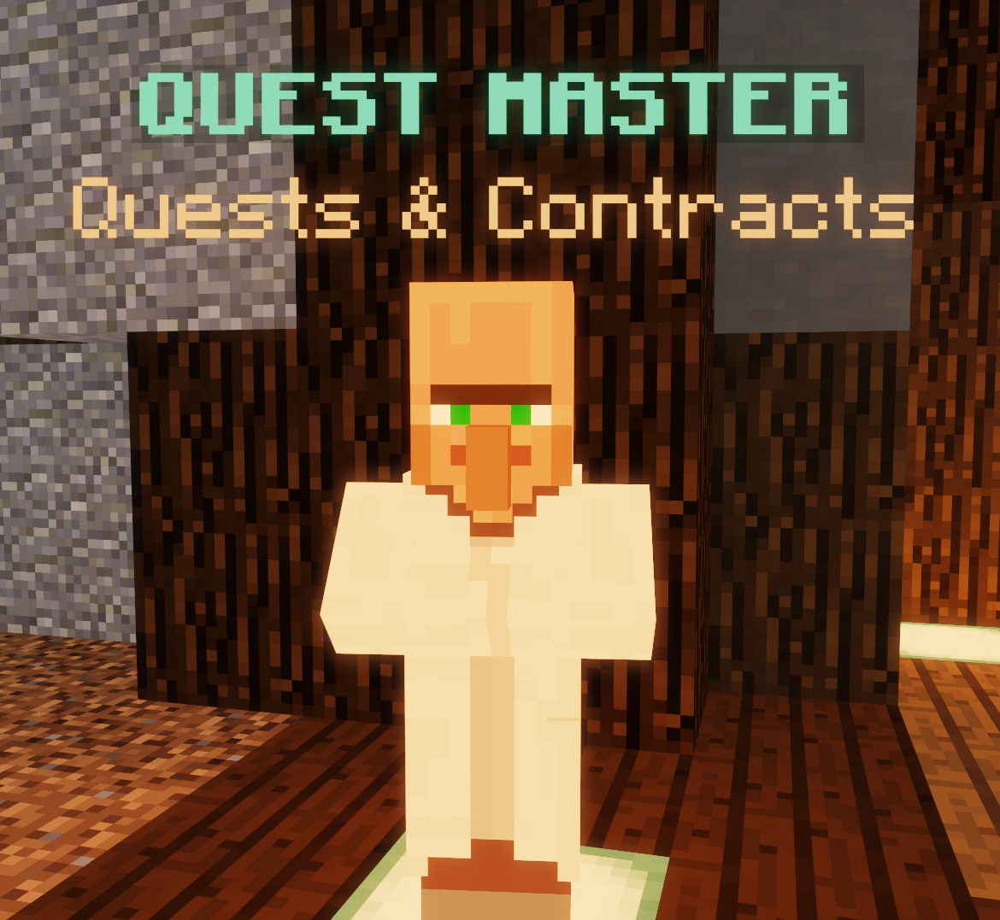

|  |
| The Quest Master. |
Quests are built-in missions in the Hypixel server. In most games, such as The Pit, most quests reset once every day, with a subset resetting once per week. Quests and contracts can be activated at the Quest Master NPC at spawn.
Completing The Pit's quests grants gold and Hypixel (not Pit) Experience. Daily quests reset every day at midnight Eastern Time; the weekly quest resets on Friday at midnight Eastern Time.
There are three quests in The Pit:
When a server-wide event, such as the Summer event or the Halloween event, is active, quests give Event Experience, used to purchase unique seasonal cosmetics in lobbies. This has no effect on Pit gameplay.
Quests give the following amounts of Event Experience:
Event Experience is multiplied by the player's in-game rank; VIP players receive 1.5× more experience, VIP+ receives 2×, MVP receives 2.5×, MVP+ receives 3×, and MVP++ receives 3.5×.